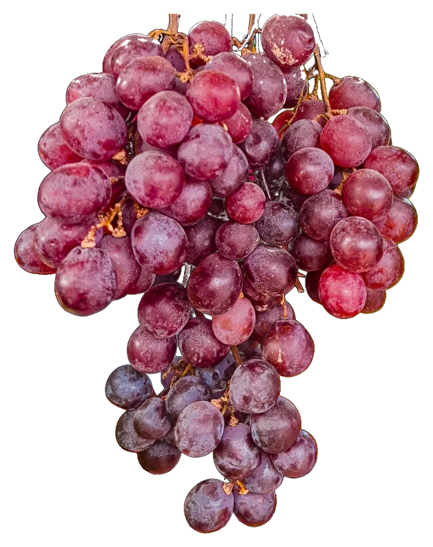

Niveau 0 · Rue Mathieu de Dombasle
Descendez
à la cave.
Deux cents vins, un comptoir, une scène. Depuis 2013, au cœur de Perpignan.
Faites défiler pour descendre
Niveau −1 · La cave
Deux cents vins.
Huit sur dix du Roussillon.
Chaque bouteille est goûtée avant d'entrer en rayon. On vous conseille selon le moment, le plat et le budget, des petits prix aux grandes cuvées.
- Casier A200vinsdont 80 % du Roussillon
- Casier B450bièresartisanales et brassées avec soin
- Casier C150spiritueuxwhiskys, rhums, gins, liqueurs
Niveau −2 · Du raisin au verre
Du raisin au verre
- 01
La vigne
Des raisins du Roussillon, cueillis chez des vignerons que l'on connaît par leur prénom.
- 02
La bouteille
Elle descend à la cave, au frais, à l'abri de la lumière. Elle attend son moment.
- 03
Le verre
On l'ouvre au comptoir, on vous la sert. Si elle vous plaît, vous repartez avec.

Niveau −4 · La scène
On sert aussi
de la culture.
Quatre cents mètres carrés, une programmation renouvelée chaque trimestre.
| N° | Rendez-vous | Ce qu'on y trouve | Rythme |
|---|---|---|---|
| 01 | Concerts | Groupes de la région, en acoustique | Chaque mois |
| 02 | Expositions | Artistes locaux, aux murs de la cave | Chaque trimestre |
| 03 | Danse | Cours et soirées dansantes | Chaque semaine |
| 04 | Conférences | Le vin, le territoire, ceux qui le font | Au fil de la saison |
Niveau −5 · Location de tireuses
Une tireuse
pour votre fête.
Mariage, anniversaire, association. On vous conseille les fûts, on livre et on installe si vous le souhaitez, puis on reprend le matériel.
offerte
dès 80 €
le fût de 30 litres
soit 0,67 € le demi de 25 cl
Retour à la surface
Il ne manque
plus que vous.
Horaires
Lun. 15 h – 21 h · mar.–sam. 10 h – 12 h 30 et 14 h 30 – 21 h
| Lundi | 15 h – 21 h |
|---|---|
| Mardi – samedi | 10 h – 12 h 30 14 h 30 – 21 h |
| Dimanche | Fermé |